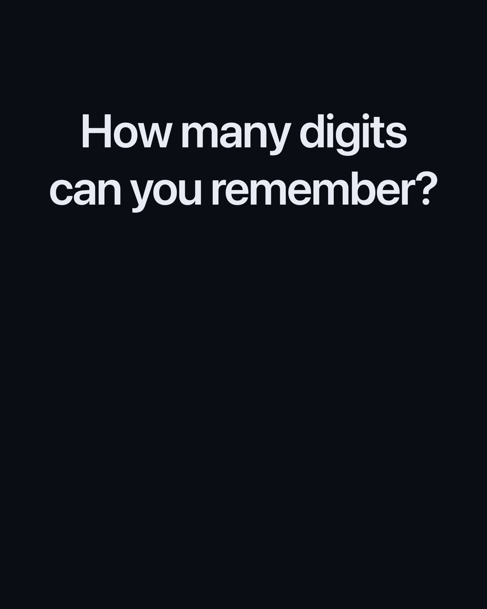
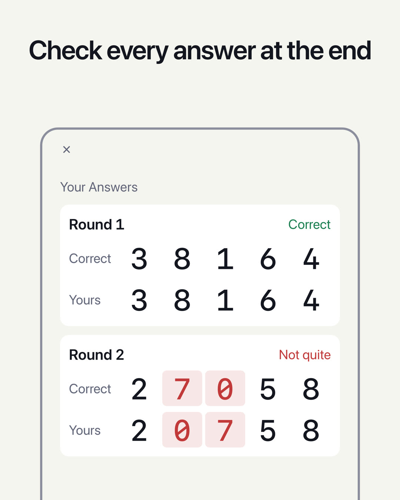

TEST DI MEMORIA NUMERICA / DIGIT SPAN
Quante cifre riesci a ricordare?
Le cifre appaiono una alla volta. Quando spariscono, digitale nell’ordine in cui le hai viste. Scegli un livello (numero di cifre) e rispondi a 5 domande. Il livello più alto in cui rispondi correttamente a tutte e 5 indica quante cifre riesci a ricordare: il tuo digit span. Un semplice test della memoria a breve termine.
Prossimamente (gratis, per iPhone)

Come funziona
- Guarda le cifreAppaiono una alla volta (0,7 secondi ciascuna, come impostazione predefinita).
- Digitale nell’ordine in cui le hai visteIn modalità “Inverso”, digitale dall’ultima cifra alla prima.
- Controlla le 5 risposteCinque domande con lo stesso numero di cifre. A ogni domanda vedi solo se la risposta è corretta o sbagliata; alla fine vedi tutte e 5 le risposte insieme. Il livello più alto in cui rispondi correttamente a tutte e 5 è il tuo digit span.
Guida completa e domande frequenti →
Caratteristiche
- Due test, “Diretto” e “Inverso”, ognuno con il proprio record personale. In “Inverso” devi riordinare le cifre a mente, quindi entra in gioco anche la memoria di lavoro
- Nella schermata Risultato controlli tutte e 5 le domande: la tua risposta accanto a quella esatta, con le cifre sbagliate evidenziate
- Nella schermata Storico vedi l’andamento del tuo record personale giorno per giorno
- Puoi cambiare il livello (da 2 a 12 cifre) e la velocità con cui vengono mostrate le cifre (da 0,05 a 2,0 secondi)
- Scegli come vengono presentate le cifre: Schermo, Voce o Entrambi. Con Voce diventa un test di ascolto
- Scegli il tema (Sistema, Chiaro o Scuro) e il colore (Viola, Blu, Arancione o Rosa)
- Tutte le cifre sono a spaziatura fissa, su una schermata essenziale, simile a uno strumento di misura
- I risultati restano solo sul tuo dispositivo. Nessun accesso richiesto
Si ritiene che un adulto ricordi in genere 7±2 cifre in ordine diretto (Miller, 1956). Questa app conta un livello solo quando rispondi correttamente a tutte e 5 le domande con lo stesso numero di cifre, quindi il punteggio è calcolato in modo diverso dai test standard. L’app serve a verificare quante cifre riesci a ricordare; non fornisce una diagnosi medica e non ha lo scopo di migliorare la memoria.
App sorella
N-Back Brain TrainerUn test della memoria di lavoro in cui aggiorni di continuo ciò che ricordiPubblicità
La pubblicità appare in fondo alle schermate Home, Risultato e Storico. Quando inizi un test (“Inizia il test” nella Home o “Riprova” nella schermata Risultato; una volta su due) appare un annuncio a schermo intero. Nessun annuncio viene mostrato mentre guardi le cifre, digiti la risposta o vedi se è corretta.
Con un abbonamento Premium attivo (mensile, a rinnovo automatico; il prezzo è indicato nell’app e su App Store) la pubblicità non viene mostrata. L’abbonamento si rinnova automaticamente, a meno che non venga annullato almeno 24 ore prima della fine del periodo in corso. Per le condizioni e le modalità di annullamento, consulta i Termini di utilizzo. Tutte le funzioni di test e storico sono utilizzabili anche senza abbonamento.